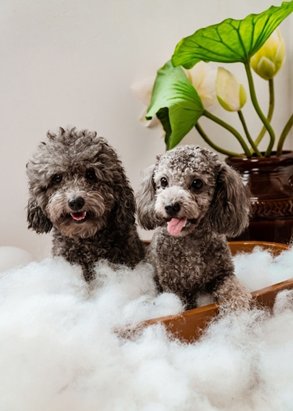

Our Services
Full Service Grooming & Spa Care
At Clementine's Pet Spa & Grooming, our full-service grooming is designed to keep your pets looking and feeling their very best. From routine maintenance to complete spa treatments, our experienced groomers provide personalized care in a calm, safe, and welcoming environment. Every visit is tailored to your pet's breed, coat type, and individual needs to ensure a comfortable and enjoyable grooming experience.
We offer a variety of pet grooming packages that include bathing, brushing, nail trimming, ear cleaning, teeth brushing, and specialty spa treatments. Whether your pet needs a quick refresh or a complete makeover, our professional team uses gentle handling techniques and high-quality grooming products to deliver exceptional results.
Our Services Include:
- Full-Service Grooming.
- Bath & Brush.
- Nail Trimming.
- Ear Cleaning.
- Teeth Brushing & Cleaning.
- Flea & Tick Treatment.
- Specialty Spa Treatments.
Our pet bath and brush service is perfect for maintaining a clean, healthy coat between full grooming appointments. No matter which service you choose, our goal is to provide professional care that keeps your pet comfortable, healthy, and looking their best while giving you complete peace of mind.
